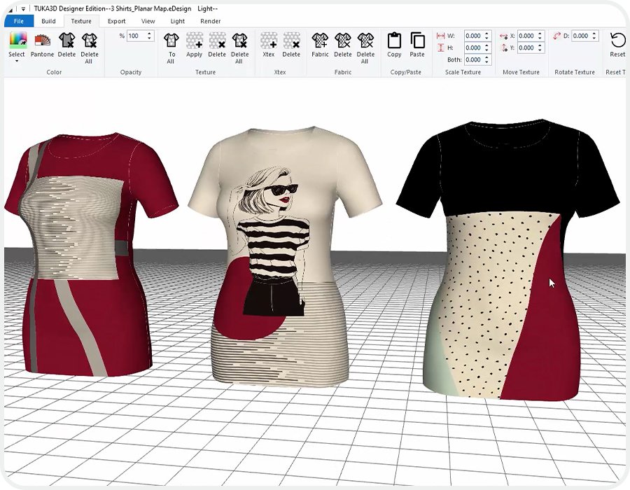
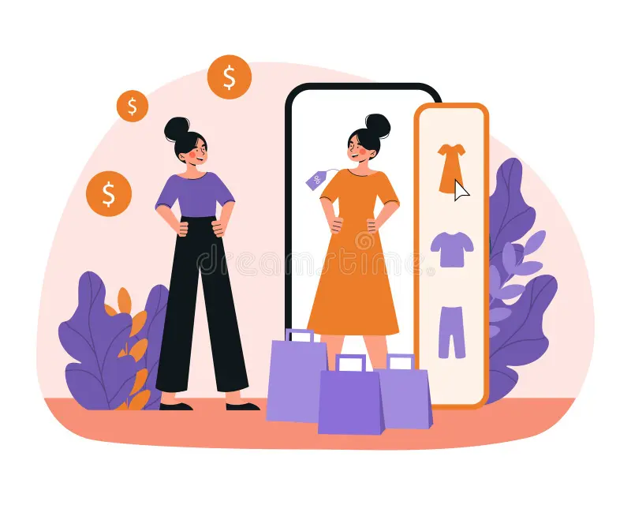

Looking ahead, the Kiwi app has exciting plans for its future development and enhancement. Here are some of the key next steps that the app aims to undertake:
The app will continue to refine its personalization algorithms and features. This includes refining the accuracy of body scanning, expanding color and style preferences, and incorporating user feedback to provide even more tailored fashion recommendations. The aim is to make each user's experience truly unique and reflective of their individual style.
Recognizing the importance of social engagement in the fashion world, the Kiwi app will introduce social features. Users will be able to share their favorite outfits, seek opinions from their network, and even follow influencers or fashionistas for inspiration. This will transform the app into a community where users can connect, share, and discover together.
The app plans to leverage AR technology to allow users to virtually try on outfits before making a purchase. This will provide a fun and interactive way for users to visualize how different clothing items will look on them, enhancing the online shopping experience and reducing the need for returns.
